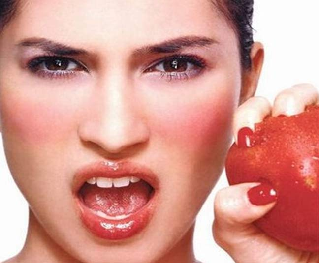
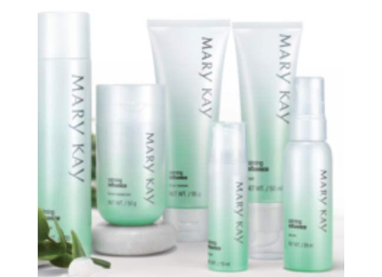

也许你目前的皮肤看上去没什么大问题，但是对待闹脾气的皮肤，预防比治疗更重要，现在就让我们通过一个简单的测试来看看你的皮肤脾气有多大吧！

面部测试
| 1. |
你的面部目前有脱皮、紧绷、发热的现象？ |
| 2. |
你是否为敏感体质，对各种刺激都反应？ |
| 3. |
你的皮肤对一般化妆品的耐受性较差，且对其温和程度有苛刻的要求？ |
| 4. |
皮肤先天比较薄，两颊和鼻翼旁甚至面颊处有红血丝？ |
| 5. |
常食用刺激性（浓茶、咖啡、烟酒、辛辣）食物，肌肤易出现泛红现象？ |
| 6. |
季节转换、日晒、气温急剧变化或者更换护肤品时，你的皮肤会出现过刺痛、紧绷或灼热等不适的感觉？ |
| 7. |
最近工作或者生活压力增大，有熬夜或睡眠不足的现象？ |
| 8. |
所在城市经常会出现雾霾或沙尘现象？ |
| 9. |
经常处于空调环境？ |
眼部测试
| 10. |
使用眼部彩妆品或护肤品时，曾出现过敏感现象？ |
| 11. |
眼周肌肤有干燥、刺痛瘙痒感，甚至有红血丝或泛红现象？ |
| 12. |
每天使用电脑时间超过5小时？ |
| |
来看看结果吧！
1.面部测试1～3题如选择“是”的选项大于1个（含1个），4～9题跳过不需要回答，直接进入眼部测试
2.面部测试1～3题回答完，如选择“否”，进入4～9题选择，若选择“是”的选项大于1个（含1个），进入眼部测试 |
| |
解读
1～3题选择“是”的选项大于1个（含1个），肌肤处于严重的亚健康状态，肌肤非常脆弱，防护意识也不够，如果不注意保养，肌肤的敏感现象会日益频发，随着肌肤抵抗力进一步下降，在敏感范围扩大的同时有可能会造成肌肤永久性损伤。
4～9题选择“是”的选项大于1个（含1个），肌肤已经进入亚健康状态，可千万不能忽视，种种因素如长期处于空调房间，雾霾天气，季节地域的转换，或者各种压力都有可能诱发肌肤的紧绷、发热、刺痛等敏感现象。肌肤会变得越来越脆弱，引发提早老化、暗沉色斑、痘痘等肌肤问题。
10～12题选择“是”的选项大于1个（含1个），眼周肌肤处于亚健康状态，要特别关注眼周肌肤的呵护，避免出现敏感现象。
根据你的测试结果，现在就为你定制对抗亚健康方案哦~


如果你的面部肌肤目前已经处于严重亚健康，而眼部肌肤也已经进入亚健康，建议您使用舒颜全套产品配合滋润修颜粉底乳+舒活眼膜啫哩。精简的配方，不仅可以改善肌肤亚健康，而且可以为肌肤搭建一个防护屏障，让你的面部肌肤和眼部肌肤在安全舒缓的氛围中逐步恢复健康。
如果你的面部肌肤刚刚步入亚健康，肌肤年龄又比较年轻，建议您使用：柔性洗面霜+舒颜柔肤水+舒颜精华+舒颜面膜+滋养润肤乳液+粉底乳，经典护肤系列帮助面部肌肤调理好肤质，每一款经典系列产品中的产品均含有特别的专利植物精华组合Botanic Power ®，蕴含以水飞蓟果、罗汉果、柳珊瑚等植物提炼而成的滋养配方，帮助肌肤保湿平衡，补充能量，恢复自然健康状态。而舒颜柔肤水、舒颜面膜更是富含了帮助肌肤隔绝外忧舒缓平衡的有效成份，强健肌肤保护膜，减缓外界刺激对肌肤的侵袭，让肌肤恢复持久健康年轻光彩。
如果您的面部肌肤刚刚步入亚健康，但是又有改善老化问题的需求，建议您使用：三合一洁面乳+抗皱保湿乳+修复晚露+幻时佳紧颜精华露+滋润修颜粉底乳+舒颜柔肤水+舒颜精华露+舒颜眼部啫哩+舒颜面膜，幻时系列和幻时佳系列产品可以多角度的帮助肌肤减缓衰老，配合帮助肌肤回复健康状态的舒颜柔肤水、舒颜精华露、舒颜眼部啫哩和舒颜面膜，让减缓老化的问题更快的解决！
如果您的眼部肌肤已经步入亚健康，但同时伴有黑眼圈、细小皱纹的困扰，建议您在使用舒颜眼部啫哩的基础上搭配黑眼圈修护精华露和抗皱精华素，将眼部问题全面狙击！